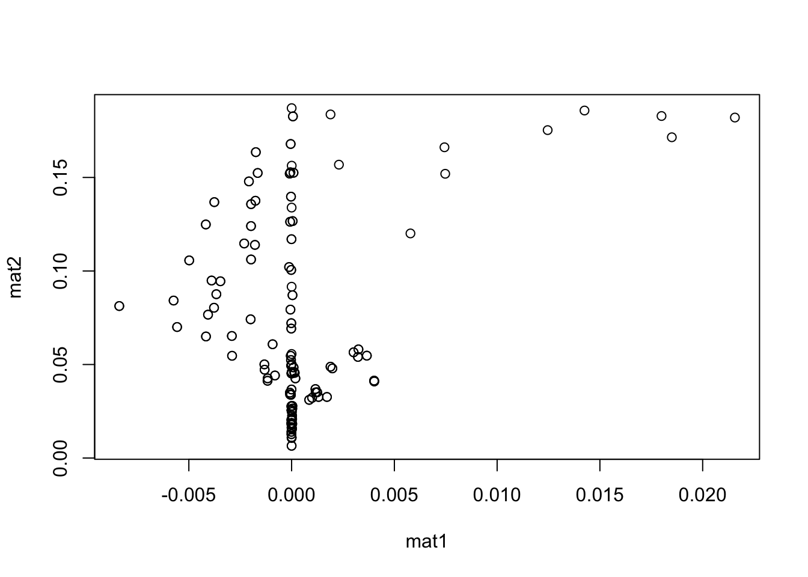

Maximum likelihood
Proposition 1 For the multivariate Bernoulli model in the response pattern representation with log-likelihood given by \[\begin{equation} \ell({\boldsymbol\theta}) = \sum_{r=1}^{R} \hat n_r \log \pi_{r}({\boldsymbol\theta}), \end{equation}\] the expected (unit) Fisher information matrix about the \(m\)-dimensional real parameter vector \({\boldsymbol\theta}\) is \({\mathcal I}= {\boldsymbol\Delta}^\top {\mathbf D}^{-1} {\boldsymbol\Delta}\in \mathbb{R}^{m\times m}\), where
- \({\boldsymbol\Delta}_{r,k} = \frac{\partial\pi_r({\boldsymbol\theta})}{\partial\theta_k}\), \(r=1,\dots,R\), \(k=1,\dots,m\); and
- \({\mathbf D}= \mathop{\mathrm{diag}}(\pi_1({\boldsymbol\theta}),\dots,\pi_R({\boldsymbol\theta}))\).
Proof. For \(k=1,\dots,m\), the partial derivative of the log-likelihood \(\ell({\boldsymbol\theta})\) with respect to \(\theta_k\) is \[\begin{equation} \frac{\partial\ell({\boldsymbol\theta})}{\partial\theta_k} = \sum_{r=1}^{R} \hat n_r \frac{\partial\log \pi_{r}({\boldsymbol\theta})}{\partial\theta_k} = \sum_{r=1}^{R} \frac{\hat n_r}{\pi_{r}({\boldsymbol\theta})} \frac{\partial \pi_{r}({\boldsymbol\theta})}{\partial\theta_k}. \tag{1} \end{equation}\] Differentiating again with respect to \(\theta_l\) this time, where \(l\in\{1,\dots,m\}\), we get \[\begin{equation}\label{eq:der_score} \frac{\partial\ell({\boldsymbol\theta})}{\partial\theta_k\partial\theta_l} = \sum_{r=1}^{R} \frac{\hat n_r}{\pi_{r}({\boldsymbol\theta})} \frac{\partial^2 \pi_{r}({\boldsymbol\theta})}{\partial\theta_k\partial\theta_l} - \sum_{r=1}^{R} \frac{\hat n_r}{\pi_{r}({\boldsymbol\theta})^2} \frac{\partial \pi_{r}({\boldsymbol\theta})}{\partial\theta_k} \frac{\partial \pi_{r}({\boldsymbol\theta})}{\partial\theta_l}. \end{equation}\] Taking negative expectations of the quantity above yields the \((k,l)\)th element of the full Fisher information matrix: \[\begin{align}\label{eq:negexpscore} -\mathop{\mathrm{E}}\left[\frac{\partial\ell({\boldsymbol\theta})}{\partial\theta_k\partial\theta_l} \right] &= \sum_{r=1}^{R} \frac{\mathop{\mathrm{E}}(\hat n_r)}{\pi_{r}({\boldsymbol\theta})^2} \frac{\partial \pi_{r}({\boldsymbol\theta})}{\partial\theta_k} \frac{\partial \pi_{r}({\boldsymbol\theta})}{\partial\theta_l} - \sum_{r=1}^{R} \frac{\mathop{\mathrm{E}}(\hat n_r)}{\pi_{r}({\boldsymbol\theta})} \frac{\partial^2 \pi_{r}({\boldsymbol\theta})}{\partial\theta_k\partial\theta_l} \nonumber \\ &= n\sum_{r=1}^{R} \frac{\cancel{\pi_{r}({\boldsymbol\theta})}}{\pi_{r}({\boldsymbol\theta})^{\cancel{2}}} \frac{\partial \pi_{r}({\boldsymbol\theta})}{\partial\theta_k} \frac{\partial \pi_{r}({\boldsymbol\theta})}{\partial\theta_l} - n\sum_{r=1}^{R} \frac{\cancel{\pi_{r}({\boldsymbol\theta})}}{\cancel{\pi_{r}({\boldsymbol\theta})}} \frac{\partial^2 \pi_{r}({\boldsymbol\theta})}{\partial\theta_k\partial\theta_l} \nonumber \\ &= n\sum_{r=1}^{R} \frac{1}{\pi_{r}({\boldsymbol\theta})} \frac{\partial \pi_{r}({\boldsymbol\theta})}{\partial\theta_k} \frac{\partial \pi_{r}({\boldsymbol\theta})}{\partial\theta_l} - \cancel{ n\sum_{r=1}^{R} \frac{\partial^2 \pi_{r}({\boldsymbol\theta})}{\partial\theta_k\partial\theta_l} } , \end{align}\] where the cancellation of the second term in the last line above follows again from the fact that for all \(k=1,\dots,m\), \[\begin{equation} \sum_{r=1}^R \pi_{r}({\boldsymbol\theta}) = 1 \ \ \Rightarrow \ \ \sum_{r=1}^R \frac{\partial \pi_{r}({\boldsymbol\theta})}{\partial\theta_k} = 0. \tag{2} \end{equation}\] Dividing by \(n\) gives the desired result.
Proposition 2 The maximum likelihood estimators are a class of best asymptotically normal (BAN) estimators \(\hat{\boldsymbol\theta}\) of \({\boldsymbol\theta}\) that satisfy \[\begin{equation} \sqrt n (\hat{\boldsymbol\theta}- {\boldsymbol\theta}) = \sqrt n \, {\mathbf B}\big({\mathbf p}- {\boldsymbol\pi}({\boldsymbol\theta})\big) + o(1), \tag{3} \end{equation}\] where \({\mathbf B}= {\mathcal I}^{-1} {\boldsymbol\Delta}^\top {\mathbf D}^{-1}\) is an \(m\times R\) matrix.
Proof. Let \(\hat{\boldsymbol\theta}\) be the MLE of \({\boldsymbol\theta}\). Then, maximum likelihood theory tells us that as \(n\to\infty\), \[\begin{equation}\label{eq:limitdisttheta} \sqrt n (\hat{\boldsymbol\theta}- {\boldsymbol\theta}) \xrightarrow{\text D} \mathop{\mathrm{N}}({\mathbf 0}, {\mathcal I}^{-1}). \end{equation}\] Consider now the first order Taylor expansion of the score vector \(\nabla\ell({\boldsymbol\theta})\) (with entries given in (1) above) about some parameter value \({\boldsymbol\theta}_0\): \[\begin{align} \nabla \ell ({\boldsymbol\theta}) &= \nabla \ell({\boldsymbol\theta}_0) + \textcolor{gray}{\frac{n}{n}} \nabla^2\ell({\boldsymbol\theta}_0) ({\boldsymbol\theta}- {\boldsymbol\theta}_0 ) + o(n^{-1/2}) \\ &\xrightarrow{\text P} \nabla \ell({\boldsymbol\theta}_0) - n{\mathcal I}({\boldsymbol\theta}- {\boldsymbol\theta}_0) \ \text{as $n\to\infty$}. \end{align}\] This implies that \[\begin{align} \cancelto{0}{\nabla \ell (\hat{\boldsymbol\theta})} &\approx \nabla \ell({\boldsymbol\theta}) + n{\mathcal I}({\boldsymbol\theta}- \hat{\boldsymbol\theta}) \\ \Rightarrow (\hat{\boldsymbol\theta}-{\boldsymbol\theta}) &= \frac{1}{n} {\mathcal I}^{-1} \nabla\ell({\boldsymbol\theta}) \nonumber \\ \Rightarrow \sqrt n (\hat{\boldsymbol\theta}-{\boldsymbol\theta}) &= \frac{\sqrt n}{n} {\mathcal I}^{-1} \nabla\ell({\boldsymbol\theta}) \tag{4} \end{align}\]
We wish to express the score vector \(\nabla\ell({\boldsymbol\theta})\) in terms of the errors \({\mathbf e}:= {\mathbf p}- {\boldsymbol\pi}({\boldsymbol\theta})\). Notice that \[\begin{align*} n \sum_{r=1}^{R} \big(p_r - \pi_{r}({\boldsymbol\theta})\big) \frac{1}{\pi_{r}({\boldsymbol\theta})}\frac{\partial\pi_{r}({\boldsymbol\theta})}{\partial\theta_k} &= \sum_{r=1}^{R} \frac{\overbrace{n p_r}^{\hat n_r}}{\pi_{r}({\boldsymbol\theta})}\frac{\partial\pi_{r}({\boldsymbol\theta})}{\partial\theta_k} - n \sum_{r=1}^{R} \frac{\pi_{r}({\boldsymbol\theta})}{\pi_{r}({\boldsymbol\theta})}\frac{\partial\pi_{r}({\boldsymbol\theta})}{\partial\theta_k} \\ &= \frac{\partial\ell(\theta)}{\partial\theta_k} - \cancel{ n \sum_{r=1}^{R} \frac{\partial\pi_{r}({\boldsymbol\theta})}{\partial\theta_k}}, \end{align*}\] where the cancellation is again due to (2). We can now see how to write the score vector in terms of the residuals: \[\begin{equation} \nabla\ell({\boldsymbol\theta}) = n {\boldsymbol\Delta}^\top {\mathbf D}^{-1} \big({\mathbf p}- {\boldsymbol\pi}({\boldsymbol\theta})\big). \tag{5} \end{equation}\] Substituting (5) into (4) gives us \[\begin{align} \sqrt n (\hat{\boldsymbol\theta}-{\boldsymbol\theta}) &\approx \sqrt n \ {\mathcal I}^{-1} {\boldsymbol\Delta}^\top {\mathbf D}^{-1} \ \big({\mathbf p}- {\boldsymbol\pi}({\boldsymbol\theta})\big) \tag{6}. \end{align}\]
Proposition 3 The covariance matrix of the residuals, \({\boldsymbol\Omega}= ({\mathbf I}- {\boldsymbol\Delta}{\mathbf B}){\boldsymbol\Sigma}({\mathbf I}- {\boldsymbol\Delta}{\mathbf B})^\top\) simplifies to \({\boldsymbol\Sigma}- {\boldsymbol\Delta}{\mathcal I}^{-1}{\boldsymbol\Delta}^\top\).
Proof. \[\begin{align} {\boldsymbol\Omega} &= {\boldsymbol\Sigma}- {\boldsymbol\Delta}{\mathbf B}{\boldsymbol\Sigma}- {\boldsymbol\Sigma}{\mathbf B}^\top{\boldsymbol\Delta}^\top + {\boldsymbol\Delta}{\mathbf B}{\boldsymbol\Sigma}{\mathbf B}^\top{\boldsymbol\Delta}^\top \nonumber \\ &= {\boldsymbol\Sigma}- {\boldsymbol\Delta}{\mathcal I}^{-1} {\boldsymbol\Delta}^\top {\mathbf D}^{-1} ({\mathbf D}- {\boldsymbol\pi}({\boldsymbol\theta}){\boldsymbol\pi}({\boldsymbol\theta})^\top) - {\boldsymbol\Sigma}{\mathbf B}^\top{\boldsymbol\Delta}^\top + {\boldsymbol\Delta}{\mathbf B}{\boldsymbol\Sigma}{\mathbf B}^\top{\boldsymbol\Delta}^\top \nonumber \\ &= {\boldsymbol\Sigma}- {\boldsymbol\Delta}{\mathcal I}^{-1} {\boldsymbol\Delta}^\top - \cancel{{\boldsymbol\Delta}{\mathcal I}^{-1} {\boldsymbol\Delta}^\top{\mathbf D}^{-1} {\boldsymbol\pi}({\boldsymbol\theta}){\boldsymbol\pi}({\boldsymbol\theta})^\top} - {\boldsymbol\Sigma}{\mathbf B}^\top{\boldsymbol\Delta}^\top + {\boldsymbol\Delta}{\mathbf B}{\boldsymbol\Sigma}{\mathbf B}^\top{\boldsymbol\Delta}^\top \nonumber \\ &= {\boldsymbol\Sigma}- {\boldsymbol\Delta}{\mathcal I}^{-1} {\boldsymbol\Delta}^\top - {\boldsymbol\Delta}{\mathcal I}^{-1} {\boldsymbol\Delta}^\top + {\boldsymbol\Delta}{\mathcal I}^{-1} \overbrace{ {\boldsymbol\Delta}^\top {\mathbf D}^{-1}{\boldsymbol\Delta}}^{{\mathcal I}} {\mathcal I}^{-1} {\boldsymbol\Delta}^\top \nonumber \\ &= {\boldsymbol\Sigma}- {\boldsymbol\Delta}{\mathcal I}^{-1} {\boldsymbol\Delta}^\top. \end{align}\]
The cancellation occurs because \[ {\boldsymbol\Delta}^\top{\mathbf D}^{-1} {\boldsymbol\pi}({\boldsymbol\theta}) = {\boldsymbol\Delta}^\top {\mathbf 1}= {\mathbf 0}. \]
Pairwise likelihood
Proposition 4 The pairwise likelihood estimator \(\hat{\boldsymbol\theta}_{\text{PL}}\) satisfies the BAN requirement (eq:ban) where the \({\mathbf B}\) matrix is given by \({\mathbf B}= {\mathcal H}^{-1}\tilde{\boldsymbol\Delta}^{-1}\tilde {\mathbf D}^{-1} {\mathbf G}\), with
- \(\tilde{\boldsymbol\Delta}\in \mathbb{R}^{\tilde R \times m}\) consists of partial derivatives of the pairwise probabilities, i.e. \(\frac{\partial\pi_{y_iy_j}^{(ij)}({\boldsymbol\theta})}{\partial\theta_k}\);
- \(\tilde{\mathbf D}= \mathop{\mathrm{diag}}((\pi_{y_iy_j}^{(ij)}({\boldsymbol\theta}))_{i<j})\); and
- \({\mathbf G}\) is some indicator matrix to transform the quantities from \(\tilde R\) dimensions to \(R\) dimensions.
Proof. The steps to show this is the same as in the maximum likelihood case, except we are now using pairwise quantities and the (unit) sensitivity matrix \({\mathcal H}=-n^{-1}\mathop{\mathrm{E}}\nabla^2\operatorname{\ell_P}({\boldsymbol\theta})\). Thus, we may arrive at the following line \[\begin{equation} \nabla\operatorname{\ell_P}({\boldsymbol\theta}) = n \tilde{\boldsymbol\Delta}^\top \tilde{\mathbf D}^{-1} \big( {\color{gray}\overbrace{\color{black} \tilde {\mathbf p}- \tilde {\boldsymbol\pi}({\boldsymbol\theta}) }^{\tilde{\mathbf e}}}\big). \tag{7} \end{equation}\] by following the ML steps above to arrive at (eq:scoreaserrors). The tilde here indicates that we are dealing with the \(\tilde R\) pairwise quantities, negative and positive outcomes alike. We need an indicator matrix \({\mathbf G}\) of an appropriate size to transform the pairwise errors \(\tilde{\mathbf e}\in \mathbb{R}^{\tilde R}\) appearing in the right-hand side of (7) to the joint-model errors \({\mathbf e}\in \mathbb{R}^R\). In other words, \({\mathbf G}\) should consist of stacked submatrices \({\mathbf G}_{y_iy_j}^{(ij)}\) that satisfy \[ {\mathbf G}_{y_iy_j}^{(ij)} \big({\mathbf p}- {\boldsymbol\pi}({\boldsymbol\theta})\big) = \begin{pmatrix} p_{00}^{(ij)} - \pi({\boldsymbol\theta})_{00}^{(ij)}\\ p_{10}^{(ij)} - \pi({\boldsymbol\theta})_{10}^{(ij)}\\ p_{01}^{(ij)} - \pi({\boldsymbol\theta})_{01}^{(ij)}\\ p_{11}^{(ij)} - \pi({\boldsymbol\theta})_{11}^{(ij)}\\ \end{pmatrix} \] for all pairs \(i,j=1,\dots,p\), \(i<j\), with the added condition that the sum of 4 entries is equal to 0 (because the proportions and probabilities must sum to 1). Such a matrix \({\mathbf G}\) is not difficult to find, but the derivation can be a bit tedious, so is omitted for brevity (however, an example is given next). Finally, we have \[\begin{equation} \sqrt n (\hat{\boldsymbol\theta}_{\text{PL}}- {\boldsymbol\theta}) \approx \sqrt n \ {\color{gray}\overbrace{\color{black}{\mathcal H}^{-1} \tilde{\boldsymbol\Delta}^\top \tilde{\mathbf D}^{-1}{\mathbf G}}^{{\mathbf B}}} \big ( {\mathbf p}- {\boldsymbol\pi}({\boldsymbol\theta}) \big). \tag{8} \end{equation}\]
Example 1 Consider \(p=3\). Then \(\tilde R = 4 \times {3 \choose 2 } = 12\) (the total number of pairwise probabilities). All pairwise outcomes can be tabulated as below. We are interested in obtaining the final column from the joint errors \({\mathbf e}= ({\mathbf p}- {\boldsymbol\pi})\).
| \((i,j)\) | \(Y_i\) | \(Y_j\) | \(\tilde e_{y_i,y_j}^{(ij)}\) | |
|---|---|---|---|---|
| 1 | (1,2) | 0 | 0 | \(p_{00}^{(12)} - \pi_{00}^{(12)}\) |
| 2 | (1,2) | 1 | 0 | \(p_{10}^{(12)} - \pi_{10}^{(12)}\) |
| 3 | (1,2) | 0 | 1 | \(p_{01}^{(12)} - \pi_{01}^{(12)}\) |
| 4 | (1,2) | 1 | 1 | \(p_{11}^{(12)} - \pi_{11}^{(12)}\) |
| 5 | (1,3) | 0 | 0 | \(p_{00}^{(13)} - \pi_{00}^{(13)}\) |
| 6 | (1,3) | 1 | 0 | \(p_{10}^{(13)} - \pi_{10}^{(13)}\) |
| 7 | (1,3) | 0 | 1 | \(p_{01}^{(13)} - \pi_{01}^{(13)}\) |
| 8 | (1,3) | 1 | 1 | \(p_{11}^{(13)} - \pi_{11}^{(13)}\) |
| 9 | (2,3) | 0 | 0 | \(p_{00}^{(23)} - \pi_{00}^{(23)}\) |
| 10 | (2,3) | 1 | 0 | \(p_{10}^{(23)} - \pi_{10}^{(23)}\) |
| 11 | (2,3) | 0 | 1 | \(p_{01}^{(23)} - \pi_{01}^{(23)}\) |
| 12 | (2,3) | 1 | 1 | \(p_{11}^{(23)} - \pi_{11}^{(23)}\) |
For the cases ‘10’, ‘01’ and ‘11’, these are straightforward. Example:
-
\(\tilde e_{10}^{(12)}\) is obtained from \((p_{100} + p_{101}) - (\pi_{100} + \pi_{101})\)
- \(B_{10}^{(12)} ({\mathbf p}- {\boldsymbol\pi}) = (00110000)({\mathbf p}- {\boldsymbol\pi})\)
-
\(\tilde e_{01}^{(12)}\) is obtained from \((p_{010} + p_{011}) - (\pi_{010} + \pi_{011})\)
- \(B_{01}^{(12)} ({\mathbf p}- {\boldsymbol\pi}) = (00001100)({\mathbf p}- {\boldsymbol\pi})\)
-
\(\tilde e_{11}^{(12)}\) is obtained from \((p_{110} + p_{111}) - (\pi_{110} + \pi_{111})\)
- \(B_{11}^{(12)} ({\mathbf p}- {\boldsymbol\pi}) = (11000000)({\mathbf p}- {\boldsymbol\pi})\).
For the remaining case of ‘00’, notice that \[\begin{align*} \tilde e_{00}^{(12)} &= p_{00}^{(12)} - \pi_{00}^{(12)} \\ &= (1 - p_{10}^{(12)} - p_{01}^{(12)} - p_{11}^{(12)}) - (1 - \pi_{10}^{(12)} - \pi_{01}^{(12)} - \pi_{11}^{(12)}) \\ &= - B_{10}^{(12)} ({\mathbf p}- {\boldsymbol\pi}) - B_{01}^{(12)} ({\mathbf p}- {\boldsymbol\pi}) - B_{11}^{(12)} ({\mathbf p}- {\boldsymbol\pi}) \\ &= - ({\color{gray}\underbrace{\color{black}B_{10}^{(12)} + B_{01}^{(12)} + B_{11}^{(12)}}_{B_{00}^{(12)}}} ) ({\mathbf p}- {\boldsymbol\pi}) \end{align*}\]
Following the pattern above, we should be getting the following design matrix:
| \(e_{111}\) | \(e_{110}\) | \(e_{101}\) | \(e_{100}\) | \(e_{011}\) | \(e_{010}\) | \(e_{001}\) | \(e_{000}\) | |
|---|---|---|---|---|---|---|---|---|
| \(\tilde e_{00}^{(12)}\) | -1 | -1 | -1 | -1 | -1 | -1 | 0 | 0 |
| \(\tilde e_{10}^{(12)}\) | 0 | 0 | 1 | 1 | 0 | 0 | 0 | 0 |
| \(\tilde e_{01}^{(12)}\) | 0 | 0 | 0 | 0 | 1 | 1 | 0 | 0 |
| \(\tilde e_{11}^{(12)}\) | 1 | 1 | 0 | 0 | 0 | 0 | 0 | 0 |
| \(\tilde e_{00}^{(13)}\) | -1 | -1 | -1 | -1 | -1 | 0 | -1 | 0 |
| \(\tilde e_{10}^{(13)}\) | 0 | 1 | 0 | 1 | 0 | 0 | 0 | 0 |
| \(\tilde e_{01}^{(13)}\) | 0 | 0 | 0 | 0 | 1 | 0 | 1 | 0 |
| \(\tilde e_{11}^{(13)}\) | 1 | 0 | 1 | 0 | 0 | 0 | 0 | 0 |
| \(\tilde e_{00}^{(23)}\) | -1 | -1 | -1 | 0 | -1 | -1 | -1 | 0 |
| \(\tilde e_{10}^{(23)}\) | 0 | 1 | 0 | 0 | 0 | 1 | 0 | 0 |
| \(\tilde e_{01}^{(23)}\) | 0 | 0 | 1 | 0 | 0 | 0 | 1 | 0 |
| \(\tilde e_{11}^{(23)}\) | 1 | 0 | 0 | 0 | 1 | 0 | 0 | 0 |
This is implemented in the R function create_G_mat():
create_G_mat(p = 3)
#> [,1] [,2] [,3] [,4] [,5] [,6] [,7] [,8]
#> [1,] -1 -1 -1 -1 -1 -1 0 0
#> [2,] 0 0 1 1 0 0 0 0
#> [3,] 0 0 0 0 1 1 0 0
#> [4,] 1 1 0 0 0 0 0 0
#> [5,] -1 -1 -1 -1 -1 0 -1 0
#> [6,] 0 1 0 1 0 0 0 0
#> [7,] 0 0 0 0 1 0 1 0
#> [8,] 1 0 1 0 0 0 0 0
#> [9,] -1 -1 -1 0 -1 -1 -1 0
#> [10,] 0 1 0 0 0 1 0 0
#> [11,] 0 0 1 0 0 0 1 0
#> [12,] 1 0 0 0 1 0 0 0
#> attr(,"pairwise")
#> [,1] [,2] [,3]
#> [1,] 1 1 2
#> [2,] 2 3 3A couple of notes:
- In the manuscript, we describe the matrix \(B\) which is a design matrix that transforms the pairwise residuals \(\tilde{\mathbf e}\) to the unviariate and bivariate residuals \({\mathbf e}_2\).
- The relationship between \({\mathbf G}\), \({\mathbf T}_2\) and \(B\) is that \({\mathbf G}= B {\mathbf T}_2\).
- Thus, the \(B\) matrix may be obtained by postmultiplying \({\mathbf G}\) with the right inverse of \({\mathbf T}_2\). The right inverse exists because \({\mathbf T}_2\) is of full row rank.
B <- lavaan.bingof:::Beta_mat_design(3)
G <- lavaan.bingof::create_G_mat(3)
T2 <- lavaan.bingof::create_T2_mat(3)
# equal
G
#> [,1] [,2] [,3] [,4] [,5] [,6] [,7] [,8]
#> [1,] -1 -1 -1 -1 -1 -1 0 0
#> [2,] 0 0 1 1 0 0 0 0
#> [3,] 0 0 0 0 1 1 0 0
#> [4,] 1 1 0 0 0 0 0 0
#> [5,] -1 -1 -1 -1 -1 0 -1 0
#> [6,] 0 1 0 1 0 0 0 0
#> [7,] 0 0 0 0 1 0 1 0
#> [8,] 1 0 1 0 0 0 0 0
#> [9,] -1 -1 -1 0 -1 -1 -1 0
#> [10,] 0 1 0 0 0 1 0 0
#> [11,] 0 0 1 0 0 0 1 0
#> [12,] 1 0 0 0 1 0 0 0
#> attr(,"pairwise")
#> [,1] [,2] [,3]
#> [1,] 1 1 2
#> [2,] 2 3 3
B %*% T2
#> [,1] [,2] [,3] [,4] [,5] [,6] [,7] [,8]
#> [1,] -1 -1 -1 -1 -1 -1 0 0
#> [2,] 0 0 1 1 0 0 0 0
#> [3,] 0 0 0 0 1 1 0 0
#> [4,] 1 1 0 0 0 0 0 0
#> [5,] -1 -1 -1 -1 -1 0 -1 0
#> [6,] 0 1 0 1 0 0 0 0
#> [7,] 0 0 0 0 1 0 1 0
#> [8,] 1 0 1 0 0 0 0 0
#> [9,] -1 -1 -1 0 -1 -1 -1 0
#> [10,] 0 1 0 0 0 1 0 0
#> [11,] 0 0 1 0 0 0 1 0
#> [12,] 1 0 0 0 1 0 0 0
test_that("G and BT2 are equal", {
expect_equal(G, B %*% T2, ignore_attr = TRUE)
})
#> Test passed
# equal
B
#> [,1] [,2] [,3] [,4] [,5] [,6]
#> [1,] -1 -1 0 1 0 0
#> [2,] 1 0 0 -1 0 0
#> [3,] 0 1 0 -1 0 0
#> [4,] 0 0 0 1 0 0
#> [5,] -1 0 -1 0 1 0
#> [6,] 1 0 0 0 -1 0
#> [7,] 0 0 1 0 -1 0
#> [8,] 0 0 0 0 1 0
#> [9,] 0 -1 -1 0 0 1
#> [10,] 0 1 0 0 0 -1
#> [11,] 0 0 1 0 0 -1
#> [12,] 0 0 0 0 0 1
(altB <- round(G %*% MASS::ginv(T2), 0))
#> [,1] [,2] [,3] [,4] [,5] [,6]
#> [1,] -1 -1 0 1 0 0
#> [2,] 1 0 0 -1 0 0
#> [3,] 0 1 0 -1 0 0
#> [4,] 0 0 0 1 0 0
#> [5,] -1 0 -1 0 1 0
#> [6,] 1 0 0 0 -1 0
#> [7,] 0 0 1 0 -1 0
#> [8,] 0 0 0 0 1 0
#> [9,] 0 -1 -1 0 0 1
#> [10,] 0 1 0 0 0 -1
#> [11,] 0 0 1 0 0 -1
#> [12,] 0 0 0 0 0 1
test_that("B can be created from T2 inv", {
expect_equal(B, altB, ignore_attr = TRUE)
})
#> Test passedProposition 5 The unit sensitivity matrix \({\mathcal H}\) under the pairwise likelihood estimation method is \({\mathcal H}= \tilde{\boldsymbol\Delta}^\top \tilde{\mathbf D}^{-1} \tilde{\boldsymbol\Delta}\).
Proof. The maximum pairwise likelihood estimator \(\hat{\boldsymbol\theta}_{\text{PL}}\) solves the estimating equations \(\mathbb{R}^q \ni \nabla \operatorname{\ell_P}({\boldsymbol\theta}) = {\mathbf 0}\). The score vector has entries \[\begin{equation} \frac{\partial\!\operatorname{\ell_P}({\boldsymbol\theta})}{\partial\theta_k} = \sum_{i<j} \sum_{y_i}\sum_{y_j} \frac{\hat n_{y_iy_j}^{(ij)} }{\pi_{y_iy_j}^{(ij)}({\boldsymbol\theta})} \frac{\partial \pi_{y_iy_j}^{(ij)}({\boldsymbol\theta})}{\partial\theta_k} \tag{9} \end{equation}\] for each \(k=1,\dots,q\). Differentiating again with respect to \(\theta_l\) can be derived to be \[\begin{equation} \frac{\partial\!\operatorname{\ell_P}({\boldsymbol\theta})}{\partial\theta_k\partial\theta_l} = \sum_{i<j} \sum_{y_i} \sum_{y_j} \left\{ \frac{\hat n_{y_iy_j}^{(ij)}}{\pi_{y_iy_j}^{(ij)}({\boldsymbol\theta})} \frac{\partial^2\pi_{y_iy_j}^{(ij)}({\boldsymbol\theta})}{\partial\theta_k\partial\theta_l} - \frac{\hat n_{y_iy_j}^{(ij)}}{\pi_{y_iy_j}^{(ij)}({\boldsymbol\theta})^2} \frac{\partial\pi_{y_iy_j}^{(ij)}({\boldsymbol\theta})}{\partial\theta_k} \frac{\partial\pi_{y_iy_j}^{(ij)}({\boldsymbol\theta})}{\partial\theta_l}\right\} . \tag{10} \end{equation}\] The \((k,l)\)th entry of the (full) sensitivity matrix is the expected value of (10), shown to be \[\begin{equation}\label{eq:sensitivitymatrix} -\mathop{\mathrm{E}}\left[ \frac{\partial\!\operatorname{\ell_P}({\boldsymbol\theta})}{\partial\theta_k\partial\theta_l} \right] = n \sum_{i<j} \sum_{y_i} \sum_{y_j} \frac{1}{\pi_{y_iy_j}^{(ij)}({\boldsymbol\theta})} \frac{\partial\pi_{y_iy_j}^{(ij)}({\boldsymbol\theta})}{\partial\theta_k} \frac{\partial\pi_{y_iy_j}^{(ij)}({\boldsymbol\theta})}{\partial\theta_l}, \end{equation}\] which in matrix form is \(n\tilde{\boldsymbol\Delta}^\top \tilde{\mathbf D}^{-1} \tilde{\boldsymbol\Delta}\). Dividing by \(n\) gives the desired result.
Proposition 6 The covariance matrix of the residuals, \({\boldsymbol\Omega}= ({\mathbf I}- {\boldsymbol\Delta}{\mathbf B}){\boldsymbol\Sigma}({\mathbf I}- {\boldsymbol\Delta}{\mathbf B})^\top\) simplifies to \({\boldsymbol\Sigma}- {\boldsymbol\Delta}{\mathcal H}^{-1}{\boldsymbol\Delta}^\top\) under the pairwise likelihood framework.
Proof. Consider first the matrix \({\boldsymbol\Delta}{\mathbf B}{\boldsymbol\Sigma}\):
\[\begin{align*} {\boldsymbol\Delta}{\mathbf B}{\boldsymbol\Sigma} &= {\boldsymbol\Delta}{\mathcal H}^{-1}\tilde{\boldsymbol\Delta}^{-1}\tilde {\mathbf D}^{-1} {\mathbf G}{\boldsymbol\Sigma}\\ &= {\boldsymbol\Delta}{\mathcal H}^{-1}\tilde{\boldsymbol\Delta}^{-1}\tilde {\mathbf D}^{-1} {\mathbf G}({\mathbf D}- \pi_{}({\boldsymbol\theta})\pi_{}({\boldsymbol\theta})^\top) \\ &= \vdots \end{align*}\]
Actually, this might not work…
fit <- lavaan.bingof:::fit_facmod_pml(1, "srs", 1000)$fit
res <- lavaan.bingof:::calc_test_stuff(fit)
attach(res)
mat1 <- Omega2
mat2 <- Sigma2 - Delta2 %*% H_inv %*% t(Delta2)
detach(res)
plot(mat1, mat2)